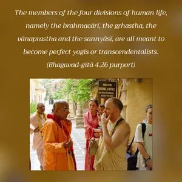
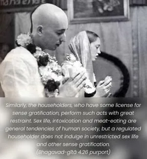
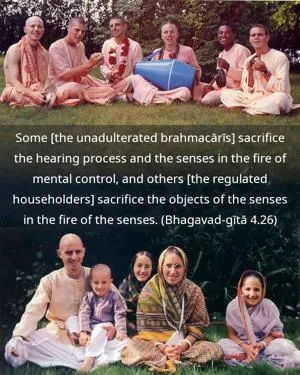

Some [the unadulterated brahmacārīs] sacrifice the hearing process and the senses in the fire of mental control, and others [the regulated householders] sacrifice the objects of the senses in the fire of the senses.



The members of the four divisions of human life, namely the brahmacārī, the gṛhastha, the vānaprastha and the sannyāsī, are all meant to become perfect yogīs or transcendentalists. Since human life is not meant for our enjoying sense gratification like the animals, the four orders of human life are so arranged that one may become perfect in spiritual life. The brahmacārīs, or students under the care of a bona fide spiritual master, control the mind by abstaining from sense gratification. A brahmacārī hears only words concerning Kṛṣṇa consciousness; hearing is the basic principle for understanding, and therefore the pure brahmacārī engages fully in harer nāmānukīrtanam – chanting and hearing the glories of the Lord. He restrains himself from the vibrations of material sounds, and his hearing is engaged in the transcendental sound vibration of Hare Kṛṣṇa, Hare Kṛṣṇa. Similarly, the householders, who have some license for sense gratification, perform such acts with great restraint. Sex life, intoxication and meat-eating are general tendencies of human society, but a regulated householder does not indulge in unrestricted sex life and other sense gratification. Marriage on the principles of religious life is therefore current in all civilized human society because that is the way for restricted sex life. This restricted, unattached sex life is also a kind of yajña because the restricted householder sacrifices his general tendency toward sense gratification for higher, transcendental life.